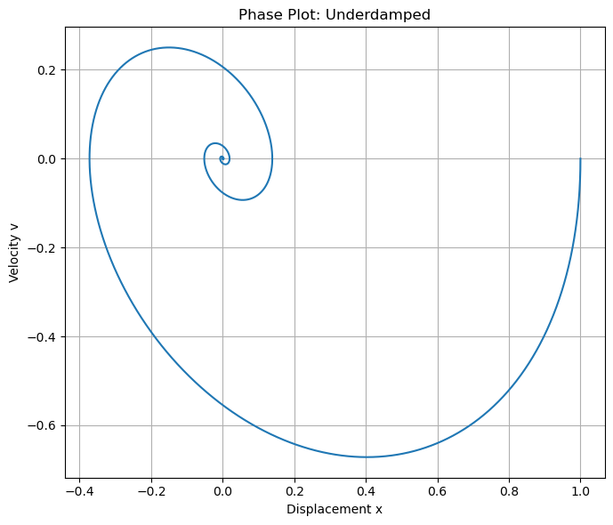
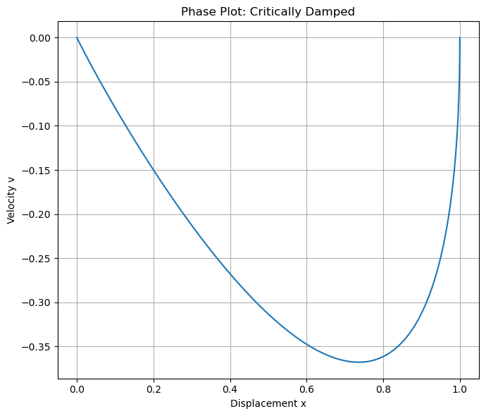
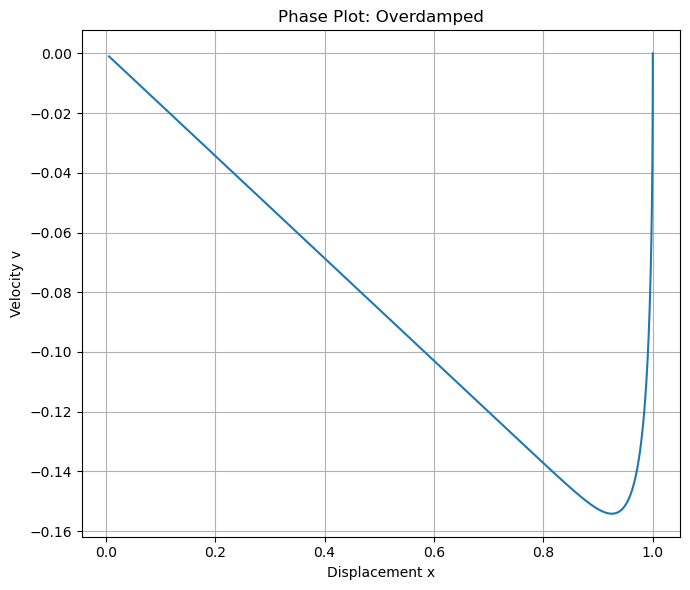

A4.1 Damped Oscillations#
Motivation#
In the previous phase we studied ideal oscillations, where energy continually moves between kinetic and potential forms while the total mechanical energy remains constant. In reality, however, oscillations rarely persist forever. Friction, air resistance, electrical resistance, and other dissipative effects gradually remove energy from the system.
These effects are collectively called damping. Damping plays a crucial role in many physical systems. It prevents structures from oscillating dangerously after disturbances, allows measuring instruments to settle quickly, and determines how long vibrations persist in musical instruments.
In this section we investigate how dissipative forces modify oscillatory motion and how different levels of damping produce qualitatively different behaviors.
Definition — Damping Force
A damping force is a force that removes mechanical energy from an oscillating system.
For many systems at moderate speeds, the damping force is approximately proportional to velocity:
where
\(b\) is the damping coefficient
\(v\) is the velocity of the oscillator.
The negative sign indicates that the force opposes the motion.
Equation of Motion for a Damped Oscillator#
Consider a mass attached to a spring that experiences a damping force proportional to velocity.
Using Newton’s Second Law:
The forces acting on the mass are
spring restoring force: \(-kx\)
damping force: \(-b\dot{x}\)
Thus,
or equivalently,
This equation describes the motion of a damped harmonic oscillator.
Characteristic Behavior#
The behavior of the oscillator depends on the relative strength of the damping compared to the restoring force. Three qualitatively different regimes emerge.
Definition — Underdamped Motion
An oscillator is underdamped when damping is small enough that oscillations still occur, but their amplitude gradually decreases over time.
The motion can be written approximately as
where
\(\gamma = \frac{b}{2m}\) is the damping rate
\(\omega_d\) is the damped angular frequency.
The oscillations persist but their amplitude decays exponentially.
Definition — Critically Damped Motion
A system is critically damped when the damping is exactly large enough to prevent oscillation while allowing the system to return to equilibrium as quickly as possible.
This type of response is commonly used in
door closers
analog measurement devices
mechanical shock absorbers.
Definition — Overdamped Motion
A system is overdamped when damping is so strong that the system returns to equilibrium slowly without oscillating.
In this case the motion is monotonic and the return to equilibrium takes longer than in the critically damped case.




Critical damping coefficient: b_c = 2.0000
Chosen underdamped coefficient: b = 0.6000
Chosen critically damped coefficient: b = 2.0000
Chosen overdamped coefficient: b = 6.0000
Natural angular frequency: omega_0 = 1.0000
Underdamped decay constant: gamma = 0.3000
Underdamped oscillation frequency: omega_d = 0.9539
Underdamped period: T_d = 6.5866
Interpreting Phase Plots#
In addition to time-based graphs, we can also represent the behavior of a damped mechanical oscillator using a phase plot, where we graph:
Since velocity is related to position by
each point on this plot represents the state of the system at a given instant:
\(x\) tells us “where the system is”
\(v\) tells us “how it is changing”
As time progresses, the system traces out a trajectory in the \((x,v)\) plane, called phase space.
What Phase Plots Show#
A phase plot does not explicitly show time. Instead, it shows:
The relationship between a variable and its rate of change
The overall structure of motion in a single curve
👉 This makes it possible to identify qualitative behavior immediately:
Oscillatory vs. non-oscillatory motion
Fast vs. slow return to equilibrium
Energy exchange between kinetic and potential forms
Underdamped Case — Spiral Toward the Origin#
For the underdamped case:
The system oscillates while gradually losing energy
In the phase plot:
The trajectory forms a spiral inward
Interpretation:
Each loop corresponds to one oscillation
The decreasing radius reflects energy dissipation
Motion alternates between:
Large \(x\), small \(v\) \(\rightarrow\) energy mostly potential
Small \(x\), large \(v\) \(\rightarrow\) energy mostly kinetic
👉 The spiral captures both oscillation and decay in a single picture.
Critically Damped Case — Direct Approach#
For the critically damped case:
The system returns to equilibrium without oscillating
It does so as quickly as possible
In the phase plot:
The trajectory moves directly toward the origin
There are no loops or spirals
Interpretation:
The system smoothly approaches equilibrium
There is no back-and-forth energy exchange
The path represents the optimal balance between inertia and damping
Overdamped Case — Slow Approach#
For the overdamped case:
The system does not oscillate
It returns to equilibrium more slowly
In the phase plot:
The trajectory approaches the origin gradually
It does not loop or spiral
Interpretation:
Strong damping suppresses oscillation
Energy is dissipated before repeated motion can develop
The system is “over-restrained,” leading to slow evolution
Why Phase Plots Are Useful#
Phase plots provide a powerful way to understand system behavior:
They combine position and rate of change in one view
They clearly distinguish between:
Oscillatory motion (spirals)
Non-oscillatory motion (direct paths)
They visualize energy flow:
Horizontal extremes (large \(x\)) \(\rightarrow\) spring potential energy
Vertical extremes (large \(v\)) \(\rightarrow\) kinetic energy
They reveal the global behavior of the system, not just snapshots in time
Key Insight#
A phase plot shows how the system moves through its possible states:
Instead of tracking motion as a function of time, we see the structure of the motion itself.
This perspective provides a deeper understanding of damped mechanical oscillators as dynamical systems, connecting mass-spring motion to broader ideas used throughout physics.
Energy Loss in Oscillations#
In an ideal oscillator the total mechanical energy
remains constant.
With damping present, however, the damping force performs negative work, removing energy from the system.
As a result,
the amplitude decreases over time
the mechanical energy decays exponentially
This explains why oscillations eventually stop in real physical systems.
Example — Shock Absorbers in a Car
A car suspension system can be modeled as a mass–spring–damper system.
The spring supports the weight of the car and allows vertical motion.
The shock absorber provides damping.
Without damping, the car would continue bouncing after hitting a bump.
With appropriate damping, the oscillations quickly decay and the ride becomes smooth and stable.
Box Activity 1 — Identifying Damping Regimes
Consider three oscillatory systems:
A tuning fork vibrating in air.
A car suspension with worn-out shock absorbers.
A heavy door with a hydraulic closer.
For each system:
Predict whether the motion is underdamped, critically damped, or overdamped.
Explain the physical reasons for your choice.
Discussion
Tuning fork: underdamped — oscillations persist for a long time with slow decay.
Worn suspension: underdamped — the car continues bouncing after hitting a bump.
Hydraulic door closer: close to critically damped — the door returns smoothly without oscillating.
Looking Ahead#
Damping removes energy from oscillators, but oscillations can also gain energy from external sources. When a system is periodically driven, the competition between damping and energy input leads to one of the most important phenomena in physics: resonance.
In the next section we study driven oscillations and how resonance emerges when the driving frequency approaches the natural frequency of the oscillator.